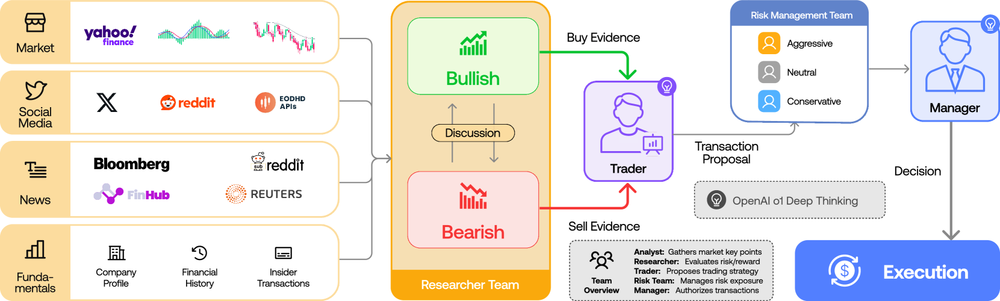
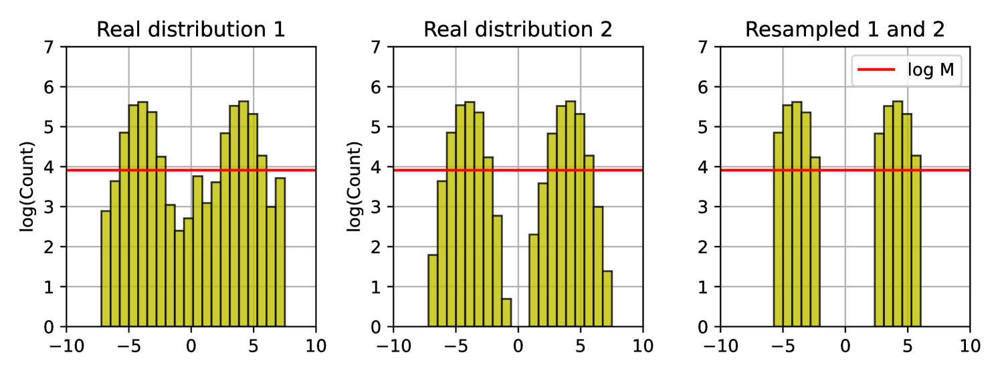

Executive Summary
TradingAgents가 GitHub에서 60K 스타를 넘기는 동안, 우리는 멀티에이전트 LLM이 금융이라는 가장 정형화된 도메인에서 새로운 패러다임으로 자리 잡는 광경을 보았다. 그러나 ACM Fintech 2026 재현성 연구는 같은 시스템이 buy-and-hold 단순 전략조차 추월하지 못함을 밝혔다. 60K 스타는 "방향성 검증"이지 "산업 transferability 검증"이 아니다.
이 보고서는 TradingAgents 패턴을 산업 데이터 운영(제조·물류·헬스케어·에너지)으로 옮기면 어디가 무너지는지 추적했다. 결론은 셋이다. 첫째, 멀티에이전트 아키텍처는 도메인 간 이미 수렴했다 — 역할 분화 + 중앙 오케스트레이션 + 도구 호출 + 검증 레이어. 둘째, 산업 도메인은 금융과 달리 "정답이 사후에 명확해지는" 백테스팅 검증이 불가능하다. 셋째, 현재 멀티에이전트 인프라(LangGraph, DeerFlow, Anthropic Managed Agents) 어디에도 데이터 품질 보증층이 표준화되어 있지 않다. Shumailov et al. (Nature 2024)이 입증한 1/1000 합성 데이터 모델 붕괴, A2A 베이스라인 60-100% 데이터 누출, MCP 5.5% 도구 포이즈닝, 88% 파일럿 실패 — 모두 같은 원인의 다른 얼굴이다.
페블러스 DataGreenhouse / DataClinic은 이 공백을 채운다. MCP 표준 위에 데이터 readiness 검증 레이어를 표준화하면, 모든 에이전트 생태계에 cross-cut 가능한 "Agentic Data Operations Quality OS"가 된다. 한국 sovereign AI 컨소시엄, CJ대한통운 NextGen AI, 삼성 AI Factory, KEPCO 그리드 패러다임 시프트가 모두 같은 미들웨어를 기다리고 있다. 본 보고서는 DeerFlow + DataGreenhouse + 도메인의 삼각 통합 아키텍처를 제안하며, 페블러스가 오케스트레이터·LLM 진영과 경쟁하지 않고 그 위에 품질·신뢰 레이어를 얹는 "complement, not compete" 전략을 제시한다.
TradingAgents 60K Stars — 멀티에이전트 시대의 분기점
2026년 5월 1일 기준, Tauric Research의 TradingAgents는 GitHub에서 62,306개 스타를 기록했다. 일일 +2,000 스타 페이스로 증가하며, 같은 분기 출시된 v0.2.0은 GPT-5, Claude 4, Gemini 3, Grok 4를 동시 지원하는 멀티 프로바이더 아키텍처로 단일 LLM 종속을 풀었다. 학계와 핀테크 스타트업의 채택이 가속됐다.
60K 스타가 가리키는 것은 단순한 "AI 자동매매" 매력이 아니다. 더 깊은 신호는 역할 분화된 LLM 에이전트 + 도메인 지식 + 다중 라운드 합의라는 일반화 가능한 패턴의 사회적 검증이다. TradingAgents는 5계층 12에이전트 토폴로지로 구성된다 — Analyst 4명(시장·뉴스·소셜·펀더멘털) → Researcher 2명(Bull / Bear) → Trader → Risk Manager 3명 → Portfolio Manager. 토론·합의·검토라는 인간 헤지펀드 의사결정 구조를 그대로 LLM 위에 올렸다.
1.1그러나 ACM Fintech 2026 재현성 연구가 드러낸 것
같은 분기, ACM Fintech 2026에 게재된 독립 재현성 연구는 다른 결론을 내놨다. TradingAgents가 buy-and-hold라는 단순 보유 전략조차 일관되게 추월하지 못했다는 보고다. 핵심 한계로 지적된 것은 두 가지 — 입력 데이터 품질에 대한 강한 가정, 그리고 멀티 라운드 토론이 시장 노이즈에 과적합되는 경향이다.
60K 스타와 buy-and-hold 미달이라는 두 사실은 모순이 아니다. 60K 스타는 "이 패턴이 검토할 만하다"는 사회적 검증이고, ACM 재현성 연구는 "이 패턴이 알파를 만든다"는 성능 검증의 부재를 보여준다. 두 가지를 분리해서 보아야 산업 도메인 transfer 논의가 가능해진다.

1.2Du et al. 2023의 천장과 B05의 새로운 경고
멀티에이전트 토론의 학술적 기반은 Du et al. (ICML 2024, "Society of Minds")이 제공한다. 다중 라운드 토론이 단일 LLM 호출 대비 환각을 줄이고 사실성을 높인다는 결과다. 그러나 2025년 11월 arXiv 2511.07784는 더 정밀한 경계를 그었다. "the ceiling of debate success is effectively bounded by the strongest participant" — 토론 성공의 천장은 가장 강한 참가자가 결정한다. 약한 LLM 여러 개로 강한 LLM 하나를 못 이긴다.
2025년 9월 FREE-MAD(arXiv 2509.11035)는 또 다른 비대칭을 발견했다. 에이전트가 자기 출력과 외부 출력 사이의 신뢰도를 조정하면 합의는 쉬워지지만, 추론 정확도는 오히려 떨어진다. "Garbage debate, garbage consensus" — 멀티에이전트가 단일 LLM보다 우월한 영역은 입력 데이터가 깨끗할 때만 성립한다. 산업에서는 사실상 항상 거짓이다.
→ 페블러스 관련 글: DeerFlow 2.0 — Researcher가 SuperAgent로 진화하기까지
금융과 산업 데이터의 비대칭성
멀티에이전트 아키텍처를 산업 도메인으로 옮기면 즉시 부딪히는 벽은 "에이전트 설계"가 아니라 "에이전트가 받는 데이터의 성질"이다. arXiv Group A(금융 A01-A06)와 Group H(산업 H01-H28)가 채택한 토폴로지는 거의 동일하다 — specialized roles + orchestrator + tool calls + reflection layer. Bosch 2,000라인 multi-agent, CJ대한통운 NextGen AI, Schneider One Digital Grid, MX-AI 5G Open RAN까지 모두 같은 패턴이다. 격차는 다른 곳에 있다.
한 줄로 요약하면 이렇다 — 아키텍처는 도메인 간 이미 수렴했고, 데이터 readiness만 발산한다. 같은 토폴로지를 깔아놓고 한쪽(금융)은 시장가라는 사후 정답이 분 단위로 도착해 백테스팅이 가능하지만, 다른 쪽(산업)은 정답이 모호한 채 분포가 끊임없이 움직인다. 아래 4대 비대칭성 표는 그 발산이 어디에서 발생하는지를 차원별로 정리한 것이다.
2.14대 비대칭성 정량 비교
| 차원 | 금융 | 산업 데이터 운영 |
|---|---|---|
| 지연 허용도 | 분~시간 (포지션 조정 가능) | ms~초 (그리드 안정성, 설비 보호) |
| 정답 명확성 | 시장가가 사후 정답으로 도착 | 정답 모호, 사고 발생 시 비용 폭증 |
| 데이터 이종성 | 정형화된 시계열·뉴스 | 센서·이미지·로그·정비기록 혼재 |
| 분포 안정성 | 레짐 전환 외에는 비교적 안정 | 계절성·운영 모드·설비 노화로 끊임없이 이동 |
| 규제 | SEC·FINRA·MiFID 일반 규정 | FDA SaMD, EU AI Act 고위험, ISO 42001, NIST AI RMF 도메인별 |
| 사후 검증 | 백테스팅 가능 | 사고 발생 후 수습 비용이 학습 비용을 압도 |
arXiv H02 "Cleaning Maintenance Logs with LLM Agents for Improved Predictive Maintenance" (2511.05311)는 산업 데이터에 단독으로 등장하는 6가지 노이즈 유형을 정리했다 — 비표준 약어, 다언어 혼재, 센서 오류 마커, 자유 텍스트 코멘트, 누락 타임스탬프, 정비 카탈로그와의 ID mismatch. 이들은 금융 도메인에서는 거의 발생하지 않는다.
2.2백테스팅이 무력화되는 순간
금융에서는 "이 에이전트 시스템이 작년 데이터로 어떤 성과를 냈을까"라는 질문에 분 단위로 답할 수 있다. 산업에서는 같은 질문이 무력해진다. 설비 고장은 1년에 몇 번 발생할 뿐이고, 부작용 보고는 수개월 후 도착하며, 그리드 사고는 사후 재구성에 수십 시간이 든다. 백테스팅 대신 사전(ex-ante) 데이터 품질 게이트가 유일한 실용적 검증 경로가 된다.
이 차이가 페블러스 DataClinic의 듀얼 임베딩(뉴럴 통계 + 도메인 규칙) 진단이 산업 도메인에서만 의미를 갖는 이유다. 금융은 시장가라는 단일 그라운드 트루스가 있어 통계만으로 충분하지만, 산업은 도메인 규칙 기반 무결성 검증이 신경망 통계와 동시에 작동해야 한다.
→ 페블러스 관련 글: Kronos — 시계열을 일반화 가능한 토큰으로
에이전트는 도구가 아니라 데이터 운영체제를 필요로 한다
2024년 7월, Shumailov et al.의 논문이 Nature 631(8022):755-759에 실렸다. 제목은 "AI models collapse when trained on recursively generated data"이다. 결론은 단호했다. 합성 데이터가 전체 학습 데이터의 1/1000에 불과해도 model collapse가 트리거된다. 분포의 꼬리가 사라지고, 분산이 감소하며, 모델은 점진적으로 자기 출력의 평균에 수렴한다.

3.1자가 학습 루프 오염 3중 위험
멀티에이전트 산업 운영에서 이 위험은 세 가지 형태로 나타난다.
① 물리 무결성 위반. 제조 라인에서 멀티에이전트가 "센서 이상"을 잘못 분류하면, 그 라벨이 다음 모델 학습 데이터로 흘러 들어간다. arXiv D04 "Self-Challenging Language Model Agents" (2506.01716)는 challenger agent의 결함 출력이 executing agent를 오염시키는 메커니즘을 분석했다. 산업 환경에서는 잘못된 라벨이 영구화되어 다음 분기 모델까지 살아남는다.
② 분포 이동 누적. arXiv D05 "Using a Feedback Loop for LLM-based Infrastructure as Code Generation" (2411.19043)은 다음과 같이 적었다 — "for each iteration of the loop, its effectiveness decreases exponentially until it plateaus and becomes ineffective." 자기 출력으로 학습한 시스템은 분포를 잡아당기며, 잡아당겨진 분포가 다음 라운드 학습 데이터가 된다. 계절성·운영 모드·설비 노화로 분포가 끊임없이 움직이는 산업 환경에서 격차는 폭발적으로 커진다.
③ 희소 이벤트 화석화. 사고·고장·부작용 같은 희소 이벤트의 잘못된 라벨이 영구 흔적을 남긴다. Stanford-Harvard ARISE 2026이 헬스케어 맥락에서 명시한 "AI 생성 medical record가 다른 AI 학습 데이터로 들어가는 feedback loop 위험"이 산업 전체에서 작동한다.
3.2관찰 가능성은 reasoning 중심 — 데이터 중심 보강이 비어있다
현재 멀티에이전트 관찰 가능성(Observability) 학술 연구는 reasoning trace에 집중되어 있다 — AgentOps(arXiv 2411.05285), AgentTrace, Verifiability-First Agents(2512.17259), TRAIL, MAT-based observability. 모두 "에이전트가 어떻게 추론했는가"를 추적한다.
반면 arXiv I11 "MX-AI: Agentic Observability and Control Platform for Open and AI-RAN" (2508.09197)은 5G Open RAN 운영에서 결정적 발견을 보고했다 — "observability quality depended more on retrieval/tool engineering than model size, as the agent consistently reasoned over current state rather than stale data." 모델 크기가 아니라 데이터 신선도가 관찰 가능성을 좌우했다는 뜻이다.
산업계는 이 갭을 인지하기 시작했다. 2026-04 Dynatrace의 Bindplane 인수, 2026-03 DataBahn AIDI 출시 모두 telemetry 측면을 보강하지만, 데이터 readiness 자체는 누구도 다루지 않는다. 데이터 lineage(DataGreenhouse) + 에이전트 reasoning trace(LangGraph LangSmith) = 산업 규제가 요구하는 full-stack provenance — 두 측을 결합한 솔루션은 시장에 부재하다.
3.3MCP는 사실상 표준, A2A는 빠르게 추격 — 미들웨어가 비어있다
MCP(Model Context Protocol)는 2026년 1분기에 SDK 9,700만 회 이상 다운로드되었고, 9,400+ 공개 MCP 서버가 등록되었다. 86%의 엔터프라이즈가 MCP 지원 모델을 사용한다. Anthropic, OpenAI, Google, Microsoft가 동시에 표준을 받아들였고, 2025-12 Google Cloud는 Maps, BigQuery, Compute Engine, Kubernetes, AlloyDB를 fully managed remote MCP server로 노출했다.
A2A(Agent-to-Agent)는 Linux Foundation Agentic AI Foundation 산하에서 150+ 조직이 합류하며 빠르게 추격 중이다. 그러나 arXiv G06 "Improving Google A2A Protocol" (2505.12490)이 보고한 베이스라인 60-100% 데이터 누출은 v1.2 cryptographic signature 도입으로 0% 누출까지 줄어들었다. MCP는 vertical(agent ↔ tools/data), A2A는 horizontal(agent ↔ agent)을 담당한다.
그러나 어느 프로토콜도 "agent invocation 전에 데이터 readiness가 보장되었는가"를 검증하는 표준을 제공하지 않는다. arXiv G02는 MCP에서 7.2%의 일반 취약점과 5.5%의 MCP-특정 도구 포이즈닝을 보고했다. DataGreenhouse를 MCP server로 노출하는 명확한 white space가 존재한다.
→ 페블러스 관련 글: hermes-agent 자가 학습 루프와 데이터 품질 위험
산업 도메인별 케이스 스터디
멀티에이전트 산업 운영의 실제 사례 4개 — 제조, 물류, 헬스케어, 에너지 — 를 보면 모든 도메인이 데이터 품질을 driver/blocker로 명시하고 있다.
이 4개 도메인은 표면적으로는 전혀 다른 산업처럼 보이지만, 멀티에이전트 패턴을 적용하는 순간 동일한 토폴로지로 수렴한다 — 분석 에이전트가 이종 데이터를 분담하고, 의사결정 에이전트가 종합한 후, 실행 에이전트가 도메인 명령(PLC·운송지시서·EHR·보호계전기 시퀀스)을 발행한다. 그러나 데이터 품질 challenge는 도메인마다 다른 얼굴로 나타난다. 제조는 센서 freshness, 물류는 schema variability, 헬스케어는 PHI 거버넌스, 에너지는 ms 단위 분포 변동이다. 4개 케이스를 차례로 보면 "같은 아키텍처, 다른 데이터 readiness 표준"이라는 본 보고서의 핵심 주장이 구체화된다.
4.1제조 — Bosch / Siemens / 삼성 / 현대
Bosch는 CES 2026에서 "Manufacturing Co-Intelligence"를 공개했다 — 2,000라인 multi-agent로 zero-defect production을 추구한다. Siemens는 Senseye에 GenAI를 결합한 Industrial Copilot으로 예측 정비를 확장 중이다. 삼성은 2030년까지 글로벌 공장을 AI-Driven Factory로 전환하는 전략을 발표했고, 현대는 CES 2026에서 AI 로보틱스 비전을 공개했다.
arXiv H01 "A Large Language Model-based multi-agent manufacturing system for intelligent shopfloor" (2405.16887)가 제시한 토폴로지는 TradingAgents와 사실상 동일하다 — 분석 에이전트가 센서·이미지·로그를 분담하고, 의사결정 에이전트가 종합한 후, 실행 에이전트가 PLC 명령을 발행한다. 핵심 challenge는 데이터 품질이다. 센서 freshness, 이미지 라벨 신뢰도, 정비기록 정합성이 동시에 보장되어야 한다.
4.2물류 — CJ대한통운 / Maersk / DHL / 쿠팡
CJ대한통운은 MODEX 2026에서 "NextGen AI"를 공개하며 미국 시장 진출의 시그널을 보냈다. 멀티에이전트 + 휴머노이드를 결합한 supply chain 재계획 플랫폼이다. arXiv H08 "Agentic LLMs in the Supply Chain" (2411.10184)은 같은 패턴의 학술 검증을 제공한다 — 수요 예측, 재고 배치, 운송 최적화, 예외 처리를 각각 전문 에이전트가 담당하고, supervisor가 종합한다.
물류 도메인의 데이터 품질 challenge는 schema variability다. 화주마다 송장 포맷이 다르고, 국가마다 통관 코드 체계가 다르며, 운송사마다 EDI 메시지가 다르다. 산업 H02가 maintenance log에서 발견한 6가지 노이즈가 여기서도 그대로 작동한다.
4.3헬스케어 — Abridge / Hippocratic AI / Mayo Clinic
Abridge는 AMIA(American Medical Informatics Association) 파트너십으로 임상 documentation을 자동화한다. Hippocratic AI는 Nurse Co-Pilot 2개를 새로 추가했다. arXiv H14 "A Survey of LLM-based Agents in Medicine" (2502.11211)은 임상 의사결정 멀티에이전트의 8가지 응용을 정리했다.
FDA는 PCCP(Predetermined Change Control Plan)로 AI 의료기기 lifecycle 관리를 의무화 중이다. arXiv J06이 보고한 충격적 수치 — FDA 승인 AI 의료기기의 단 2%만 신규 데이터로 업데이트를 보고한다. PHI 거버넌스, 부작용 라벨 신뢰도, 환자 분포 대표성이 동시에 검증되어야 한다.
4.4에너지 — Schneider / GE / KEPCO
Schneider는 2025-12 "One Digital Grid" 플랫폼을 공개했다. KEPCO는 2026-04 그리드 패러다임 시프트를 발표했다. arXiv H21 "Grid-Agent: An LLM-Powered Multi-Agent System for Power Grid Control" (2508.05702)은 부하 예측, 생성 스케줄링, 이상 탐지, 보호 협조를 분담하는 4-에이전트 토폴로지를 제시했다.
에너지 도메인의 데이터 품질 challenge는 ms 단위 분포 변동이다. 한국 그리드의 isolated system 특이성은 외산 솔루션이 학습한 분포에 없다. 도메인 규칙(보호 계전기 시퀀스, 주파수 안정도 기준)을 강제하지 않으면 멀티에이전트의 한 번의 오판이 광역 정전으로 이어진다.
→ 페블러스 관련 글: YOLO + LangGraph로 만든 비전 멀티에이전트 워크플로
신뢰도 엔지니어링과 페블러스의 포지셔닝
멀티에이전트 인프라 시장은 두 진영으로 갈렸다.
A진영 — 오케스트레이터: LangGraph(월 4,610만 다운로드, BlackRock·JPMorgan production), DeerFlow 2.0(샌드박스 + persistent memory), CrewAI(2~3 engineer-day demo), AutoGen(maintenance mode 진입). 에이전트 워크플로 정의·실행·디버깅 레이어를 담당한다.
B진영 — LLM·툴 제공자: OpenAI Assistants/Agents SDK, Anthropic Managed Agents(gVisor + MCP secure vault), Google ADK / Gemini Enterprise Agent Platform(Cloud Next '26), Microsoft Copilot Stack. 실제 추론 엔진과 가드레일을 제공한다.
두 진영 어디도 채우지 못하는 자리가 있다 — "에이전트가 다루는 데이터의 품질을 사전·사후로 보증하는 레이어"다. 페블러스는 이 공백을 차지한다.
5.188% 파일럿 실패의 데이터 origin
왜 이 갭이 결정적인가. Forrester 2026 보고서는 AI 파일럿 88% 실패의 분해를 제시했다.
아래 표를 데이터 품질 관점으로 다시 읽으면 결론이 분명해진다. evaluation gap 64%는 "검증 데이터셋이 없거나 분포 대표성이 결여되었다"는 의미이고, governance friction 57%는 "lineage·audit trail이 없어 책임 추적이 불가능하다"는 의미이며, model reliability 51%는 "학습 분포와 운영 분포가 어긋나 있다"는 의미다. 세 가지 모두 모델 아키텍처나 알고리즘이 아니라 데이터 origin에서 발생한다.
| 실패 원인 | 비율 | 데이터 품질 연결 |
|---|---|---|
| Evaluation gap | 64% | 검증 데이터셋 부재 / 분포 대표성 결여 |
| Governance friction | 57% | 데이터 lineage / audit trail 부재 |
| Model reliability | 51% | 학습 데이터 분포 ≠ 운영 분포 |
McKinsey는 멀티에이전트를 시도한 기업의 62% 중 단 10% 미만이 scale에 도달했다고 보고했다. Gartner는 잘못된 데이터 품질로 조직당 연 $12.9M의 손실이 발생한다고 추산했다. BARC AI Innovation 설문에서는 40%+ 기업이 AI/ML 출력을 신뢰하지 못하고, 45%+가 데이터 품질을 AI 성공 최대 장애물로 지목했다. "Data quality debt becomes the new technical debt."
5.2DeerFlow + DataGreenhouse + 도메인 삼각 통합 아키텍처
arXiv I04(2601.12560)는 흥미로운 발견을 보고했다. Supervisor / Reviewer 토폴로지가 hallucination을 "up to 100%"까지 줄인다는 결과다. 단, 단서가 붙는다 — supervisor가 신뢰할 수 있는 데이터를 봐야만 가능하다. 즉, 멀티에이전트 토폴로지를 아무리 정교하게 짜도 supervisor가 받는 입력이 오염되어 있으면 검증 효과는 0에 수렴한다. 이것이 본 보고서가 "에이전트 디자인" 위에 별도의 "데이터 readiness 검증 레이어"를 두자고 제안하는 직접적 근거다.

본 보고서가 제안하는 아키텍처는 세 축의 통합이다.
축 1 — DeerFlow(또는 LangGraph): 오케스트레이션 레이어. 도메인 에이전트 워크플로 정의, HITL 통합, state persistence. A진영에서 가장 산업 운영에 적합한 옵션을 선택.
축 2 — DataGreenhouse + DataClinic: 데이터 품질 OS 레이어. 에이전트 호출 전 입력 readiness 검증(pre-agent gate), 에이전트 출력 후 자가 학습 루프 진입 전 합성/실측 데이터 필터링(post-agent gate). 두 게이트를 MCP 표준 도구로 노출하면 LangGraph·DeerFlow·Anthropic Managed Agents 어디서나 plug-in 가능.
축 3 — 도메인 어댑터: 4대 도메인별 데이터 readiness 표준 — 의료영상, 제조비전, 물류IoT, 그리드 telemetry. AI-Ready Data 표준이 도메인별로 차별화되어야 한다는 강력한 근거(arXiv H02)에 따른 차별화 자산.
5.3페블러스 단기·중기·장기 로드맵
삼각 통합 아키텍처를 한 번에 구축하지 않는다. 사고 리더십 → MCP 어댑터 → 통합 플랫폼이라는 3단계 점진적 전개가 "complement, not compete" 전략과 정합된다. 첫 단계는 "어떤 갭이 비어 있는가"를 시장에 명확히 인식시키는 일이고(2026), 두 번째 단계는 그 갭을 MCP 표준 도구로 plug-in해 LangGraph·DeerFlow·Anthropic Managed Agents 어디서나 호출 가능하게 만드는 일이며(2027), 세 번째 단계는 도메인별 에이전트 레시피와 결합해 통합 플랫폼으로 묶는 일이다(2028). 아래 표는 각 시점의 전략과 이를 뒷받침하는 시장 신호를 정리한 것이다.
| 시점 | 전략 | 시장 신호 |
|---|---|---|
| 2026 단기 | 사고 리더십 — "Multi-agent industrial data operations needs a quality OS" | 본 보고서, 한국 sovereign AI 컨소시엄 제안 참여 |
| 2027 중기 | DataGreenhouse 위 멀티에이전트 어댑터 — DataClinic 진단을 LangGraph/DeerFlow MCP 도구로 노출 | CJ대한통운 NextGen AI, 삼성 AI Factory 파일럿 도입 |
| 2028 장기 | "Agentic Data Operations Platform" — 도메인 에이전트 레시피 + DataClinic 보증 + DataGreenhouse 거버넌스 일체형 | EU AI Act / FDA SaMD / ISO 42001 산출물 자동 생성 표준화 |
핵심은 NVIDIA Omniverse 위에 PebbloSim을 얹는 것과 동일한 "complement, not compete" 전략을 멀티에이전트 영역에 그대로 가져간다는 점이다. 한국 sovereign AI 컨소시엄(Samsung SDS 주도, NAVER Cloud + Samsung C&T + Kakao + Samsung Electronics + KT 합류)은 이 전략의 즉시적 시장이다.
→ 페블러스 관련 글: AI Scientist V2 — 자율 연구 에이전트의 데이터 품질 함의
페블러스가 이 문제에 주목하는 이유
DataGreenhouse는 단순 데이터 카탈로그가 아니다. 멀티에이전트 시대에는 "여러 자율 에이전트가 안전하게 데이터를 만지는 환경(safe agentic data sandbox)"으로 진화해야 한다. TradingAgents가 보여준 5계층 12에이전트 토폴로지를 산업 도메인에 transfer할 때, 입력 데이터에 도메인 무결성·라벨 신뢰도·분포 안정성을 보증하는 레이어가 빠지면 그 즉시 hermes-agent류 자가 오염 루프로 빠진다. DataClinic 듀얼 임베딩(뉴럴+심볼릭)이 이 자리를 정확히 차지한다.
6.1고객/파트너 실무 함의 — 4개 한국 산업
페블러스 잠재 고객 영역과 멀티에이전트 산업 적용이 정확히 겹친다.
한국 sovereign AI 컨소시엄(Samsung SDS 주도, NAVER Cloud + Samsung C&T + Kakao + Samsung Electronics + KT 합류)이 출범하면서, 외산 멀티에이전트 인프라(LangGraph·DeerFlow·Anthropic Managed Agents) 위에 한국 산업의 도메인 무결성을 보증하는 레이어 수요가 동시에 발생한다. 아래 4개 영역은 페블러스 DataClinic + DataGreenhouse가 즉시 plug-in할 수 있는 시장이며, 각 영역마다 외산 솔루션이 학습한 분포에는 없는 "한국 특이성"(isolated grid, 통관 코드 체계, FDA-식약처 듀얼 트랙 규제 등)이 도메인 규칙으로 강제되어야 한다.
- • 현대자동차 / 삼성전자 / 포스코(제조) — 품질 검사·예측 정비. Bosch CES 2026 + Siemens Senseye + Hannover Messe 2026 멀티벤더 데모와 동일 토폴로지를 한국 공장에 이식할 때, DataClinic이 사전 readiness 검증을 담당.
- • CJ대한통운 / 한진 / 쿠팡(물류) — 공급망 재계획 멀티에이전트 + 휴머노이드. MODEX 2026 NextGen AI가 미국 진출하는 길에 데이터 ready 표준 동반.
- • Abridge / Hippocratic AI 한국판(헬스) — 임상 데이터 / 부작용 보고 자동 분류. FDA SaMD + EU AI Act 규제 준수를 위한 결정 추적성을 DataClinic이 보증.
- • KEPCO / SK이노베이션(에너지) — 발전·송전 이상 탐지 + 그리드 균형. Schneider One Digital Grid 같은 외산 솔루션 채택 시 한국 그리드 특이성(isolated system)을 도메인 규칙으로 강제.
6.2규제 산출물은 데이터 lineage 위에서 자동 생성된다
arXiv J04는 "high-level legal requirements와 concrete verification activities 사이에 지속적 갭"이 있다고 지적했다. EU AI Act 위반은 €35M 또는 글로벌 매출 7%의 페널티를 부과한다. 그러나 J02 "2025 AI Agent Index"에 따르면 <20% 개발자만 안전 정책을 공개하고, <10%만 외부 평가 보고를 한다.
데이터 lineage(DataGreenhouse) + 변환 audit trail이 자동 생성되면 ISO 42001 / EU AI Act / FDA SaMD / NIST AI RMF가 요구하는 factsheet, model card, change log를 산출 가능하다. 이는 단순한 nice-to-have가 아니라 CFO-level 위험 관리다. 규제는 페블러스의 제약이 아니라 시장 동인이다.
6.3페블러스 도입 전 체크리스트
멀티에이전트 도입을 검토하는 조직은 모델·프레임워크 선정에 앞서 데이터 readiness 4축을 먼저 점검해야 한다. 이 4축은 본 보고서가 추적한 모든 학술 근거와 산업 실패 사례에서 공통적으로 등장한 실패 요인이다 — 분포 안정성(Shumailov 2024), 라벨 신뢰도(D04 Self-Challenging Agents), 도메인 규칙 위반(F03 Neuro-Symbolic), lineage 추적 가능성(EU AI Act / FDA SaMD). Monte Carlo·Anomalo가 제시한 5 pillars는 출발점이지만 산업 도메인에는 부족하다.
- • 분포 안정성 — 학습 분포와 운영 분포의 거리. Monte Carlo·Anomalo의 5 pillars(freshness, volume, schema, distribution, lineage)가 출발점이지만 산업 도메인에는 부족.
- • 라벨 신뢰도 — 사후 검증 가능한가? AnnotationOps 같은 라벨 거버넌스가 필요.
- • 도메인 규칙 위반 — Neuro-Symbolic 검증(arXiv F03) 적용 여부.
- • lineage 추적 가능성 — ISO 42001 / EU AI Act 산출물 자동 생성 가능한가?
멀티에이전트 산업 운영의 데이터 품질 게이트가 필요한 조직이라면, 페블러스 Pre-Agent Data Readiness Audit이 4축을 한 번에 진단합니다. 한국 sovereign AI 컨소시엄, 제조 자동화, 물류 NextGen, 임상 documentation, 그리드 통합 — 어디서든 시작할 수 있습니다.
참고문헌
학술 논문 — 금융 멀티에이전트
- Y. Xiao, E. Sun, D. Luo, W. Wang, "TradingAgents: Multi-Agents LLM Financial Trading Framework," arXiv:2412.20138 v7, 2025.
- W. Zhang et al., "FinAgent: A Multimodal Foundation Agent for Financial Trading," arXiv:2402.18485, 2024.
- Y. Yu et al., "FinCon," arXiv:2407.06567, NeurIPS 2024.
- Y. Xiao et al., "Trading-R1," arXiv:2509.11420, 2025.
학술 논문 — 멀티에이전트 토론
- Y. Du, S. Li, A. Torralba, J. Tenenbaum, I. Mordatch, "Improving Factuality and Reasoning in Language Models through Multiagent Debate," arXiv:2305.14325, ICML 2024.
- "Can LLM Agents Really Debate?" arXiv:2511.07784, 2025.
- Y. Cui, H. Fu, H. Zhang, "FREE-MAD: Consensus-Free Multi-Agent Debate," arXiv:2509.11035, 2025.
학술 논문 — 자가 학습 / 모델 붕괴
- I. Shumailov et al., "AI models collapse when trained on recursively generated data," Nature 631(8022):755-759, 2024.
- "Self-Challenging Language Model Agents," arXiv:2506.01716, 2025.
- "Using a Feedback Loop for LLM-based Infrastructure as Code Generation," arXiv:2411.19043, 2024.
학술 논문 — 관찰 가능성 / Provenance
- B. Dong, J. Lu, J. Zhu, "AgentOps: Enabling Observability of LLM Agents," arXiv:2411.05285, 2024.
- "Verifiability-First Agents," arXiv:2512.17259, 2025.
- "MX-AI: Agentic Observability and Control Platform for Open and AI-RAN," arXiv:2508.09197, 2025.
학술 논문 — Neuro-Symbolic / MCP / A2A
- B. C. Colelough et al., "Neuro-Symbolic AI in 2024: A Systematic Review," arXiv:2501.05435, 2025.
- "Model Context Protocol (MCP): Landscape, Security Threats, and Future Research Directions," arXiv:2503.23278, 2025.
- "MCP at First Glance: Security and Maintainability," arXiv:2506.13538, 2025.
- "Improving Google A2A Protocol," arXiv:2505.12490, 2025.
학술 논문 — 산업 도메인 / 거버넌스
- H. Zhao et al., "A Large Language Model-based multi-agent manufacturing system for intelligent shopfloor," arXiv:2405.16887, 2024.
- "Cleaning Maintenance Logs with LLM Agents for Improved Predictive Maintenance," arXiv:2511.05311, 2025.
- J. Jannelli et al., "Agentic LLMs in the Supply Chain," arXiv:2411.10184, 2024.
- "A Survey of LLM-based Agents in Medicine," arXiv:2502.11211, 2025.
- "Grid-Agent: An LLM-Powered Multi-Agent System for Power Grid Control," arXiv:2508.05702, 2025.
- "TRiSM for Agentic AI," arXiv:2506.04133, 2025.
- "How Do LLMs Fail In Agentic Scenarios?" arXiv:2512.07497, 2025.
- EU AI Act, Regulation (EU) 2024/1689.
- ISO/IEC 42001:2023.
업계 출처
- TradingAgents GitHub Repository (Tauric Research), 2026-05-01 직접 확인 — 62,306 stars.
- DeerFlow 2.0 GitHub (ByteDance).
- Anthropic Managed Agents engineering documentation.
- LangGraph official site (LangChain).
- Google ADK / Gemini Enterprise Agent Platform announcement (Cloud Next '26).
- Bosch Manufacturing Co-Intelligence (CES 2026).
- Siemens Senseye + Industrial Copilot 2025-12 announcement.
- Schneider Electric "One Digital Grid" 2025-12-12 release.
- Microsoft Hannover Messe 2026 industrial intelligence announcement.
- Samsung Electronics AI-Driven Factories 2030 strategy.
- Hyundai Motor Company AI Robotics CES 2026.
- CJ대한통운 NextGen AI 발표 (MODEX 2026).
- KEPCO 그리드 패러다임 시프트 (2026-04).
- Abridge AMIA 파트너십.
- Hippocratic AI Nurse Co-Pilot 2026 announcement.
- A2A Protocol 1주년 — 150+ 조직 합류 보도자료.
- MCP Adoption Statistics 2026 (Digital Applied).
- ACM Fintech 2026 TradingAgents 재현성 연구.
- McKinsey "Building the foundations for agentic AI at scale."
- Forrester 2026 AI 파일럿 실패 분석 (evaluation 64% / governance 57% / reliability 51%).
- Gartner Data Quality 연 $12.9M 손실 추산.
- BARC AI Innovation 설문 (40%+ 미신뢰, 45%+ 데이터 품질 장애물).
- Monte Carlo Data 5 pillars of data observability.
- DataBahn AIDI 2026-03 launch.
- Dynatrace + Bindplane acquisition 2026-04.
- Informatica Enterprise AI Agent Engineering whitepaper.
- 한국 sovereign AI 컨소시엄 Samsung SDS 주도 발표.